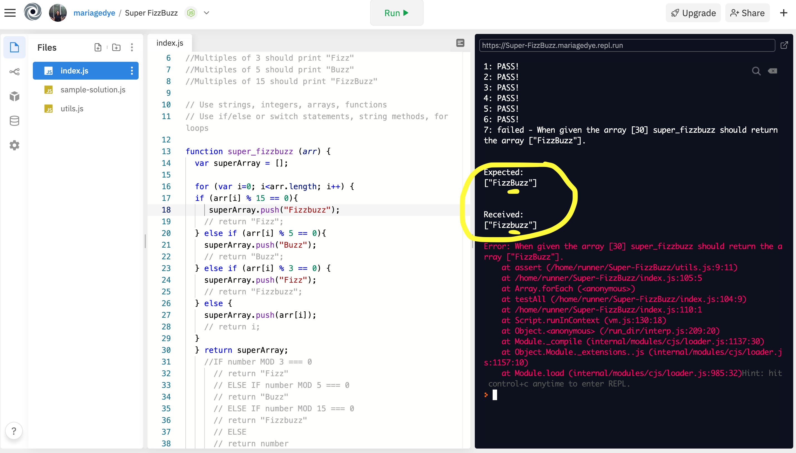

99 Problems but a duck aint one
27 September 2020
Story-time: How I got blocked on a simple problem
I was working on a popular javascript exercise called ‘superfizzbuzz’ and I was stuck towards the end of completing my code (after 3.5 hours), but because I had never done this exercise before, I actually had no idea how close I was to finishing.
After following my pseudocode, countless googling and chatting online to real people and a rubber ducky, I had a lot of trial and error by accident. I tried lots of different methods (mostly loops, if/else statements) and they all failed, I almost gave up with my current code until I had a video call with a fellow student and he helped me discover that there was no error with my method at all - all my errors were blimmin typos eg camelCase or extra (;) ...I felt soo silly but even more relieved!
I learned that attention-to-detail can really make a HUGE difference. I got so caught up in one aspect of the problem, which was writing a successful method that I completely forgot about the minor details. The thing is, the console (the black screen that lists what code is working and what is not working) is such an important tool to your coding, as it hints to where your errors are coming from.
How I solved a problem in an elegant way
Somebody on softwareengineering.stackexchange described elegant code as: “code (that) uses cleverness to accomplish something in much less code than most people would think possible, but in a way that's readable and obvious-in-hindsight and doesn't look like code golf.”
I got to be honest and say I don’t think I’ve actually solved any problems like this yet, but it is a goal! But what I DO try to be aware of is my code readability. What does that mean? It actually has a slightly different meaning to each person. “It varies between teams, companies, and programming languages. But there are two groups of important people who are judges of how readable the code is: yourself and everyone else who will later read the code.”
Shared from blog.pragmaticengineer.com
Three ways I improve my code readability is by Indenting my code, using expressive code and removing Unnecessary Information.
So how confident am I at using problem solving techniques?
- Pseudocode 90%
- Trying something 79%
- Rubber ducky method 65%
- Reading error messages 60%
- Console.logging 60%
- Googling 80%
- Asking your peers for help 80%
- Asking coaches for help `undefined`
- Improving your process with reflection 90%
I rely on this method the most as it helps me record down my thinking- my interpretation of the code I am looking at.
It's like they say; if you never try, you’ll never know! This technique I enjoy the most as it pushes me to try something new. I think my brain is most engaged with this method.
This technique is fairly new to me, I like it because you’re creating a dialogue with yourself through an inanimate object. It’s similar to console.logging except the difference is the console log is you.
One of my weaknesses is this technique as I recently learned (see first section). I will never underestimate reading error messages again(touch wood).
Another one of my weaknesses due to my lack of knowing how it works - I’ve just found out actually in the last kata exercise I was working on so I will definitely put it to more use in future.
I have a hate/love relationship with google. I know when I can’t find a straightforward answer it's because I’m not asking the right question or using the right keywords. I know as I become more proficient with js things will run more smoothly between google and I.
I enjoy being part of a group so asking and talking to peers comes very natural for me luckily. But I did learn that when asking for help, being specific is really key here.
Unfortunately I haven’t really tried very hard with this method - I think I definitely will over the next couple months, when we’re all working together in person.
Along with pseudocode, this is my go to! Everyday I end up writing pages with notes as soon as I’ve learnt something simple or complex
e.g. *Functions only return once or *Sometimes an object can contain a [Circular] which is a circular reference. If you tried to print
the object you would end up in an infinite loop
{content: {content: {content: …
Instead, your system was smart enough to notice the circularity and protect itself against it.
These notes/reflections are not always about code, sometimes it's something I learnt about myself or maybe something random like learning my college bestie knows how to properly ‘dribble’ a bball as she played on the basketball team when she was 11… basically whatever I want to reflect on!
Problem-solving for us beginner-level coders
This 10min video explains what is pseudocode, why use it and how to use it:
:max_bytes(150000):strip_icc():format(webp)/duckling-close-up-500315849-572917c93df78ced1f0b99ec.jpg)
If you don’t have a rubber ducky nearby you can ‘Talk to a Duck’ right now!